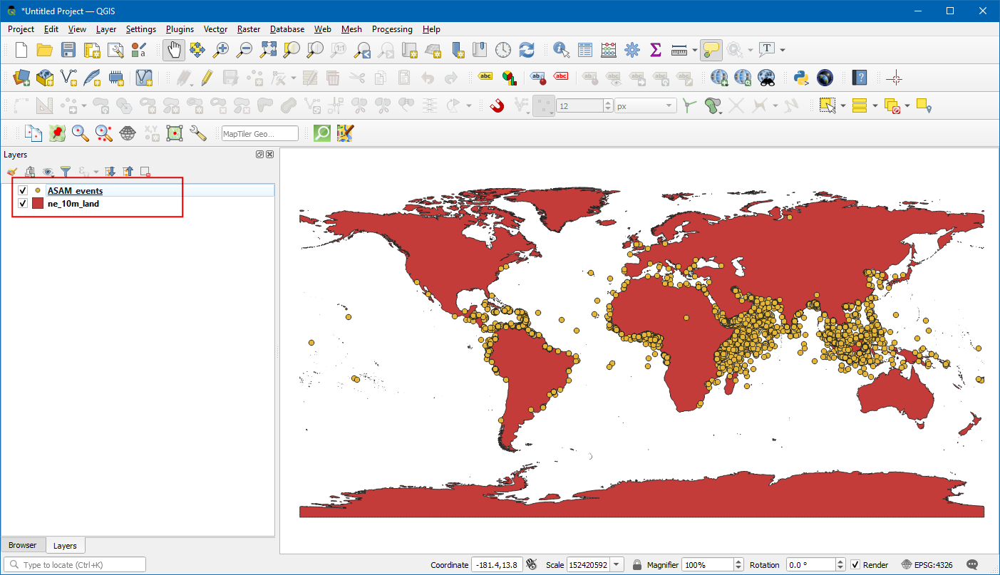
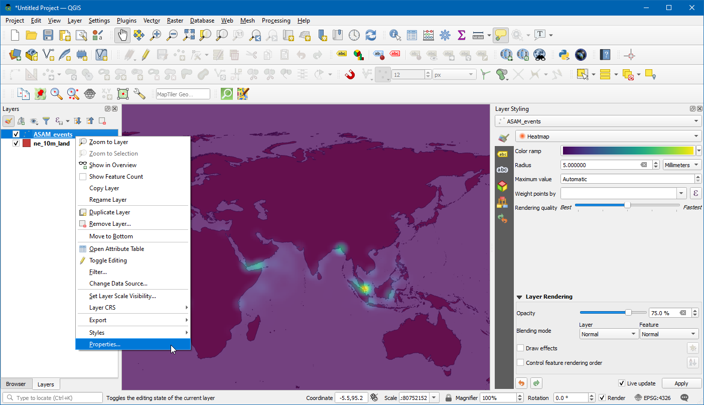
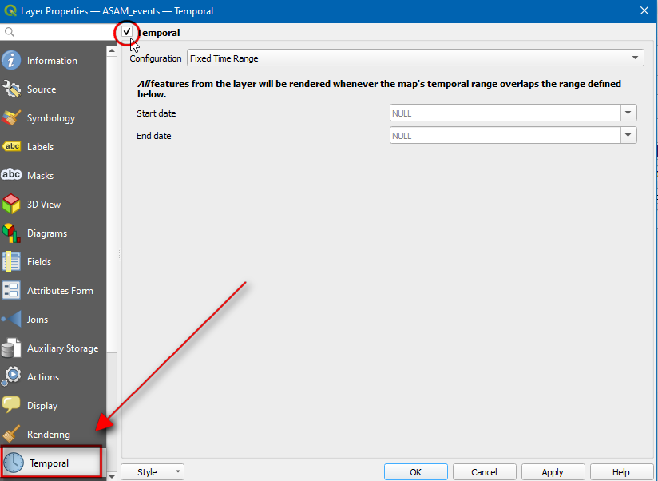
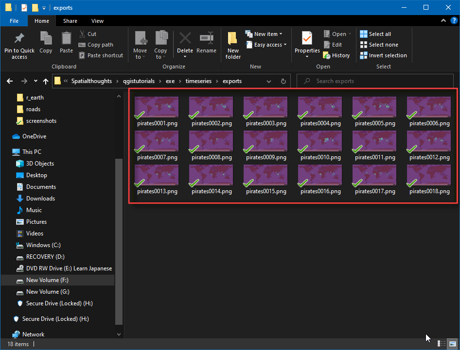

Geanimeerde gegevens tijdreeks (QGIS3)¶
Time is an important component of many spatial datasets. Along with location information, time provides another dimension for analysis and visualization of data. If you are working with dataset that contains timestamps or have observations recorded at multiple time-steps, you can easily visualize it using the Temporal controler. Temporal controler allows you to view and export ‘slices’ of data between certain time intervals that can be combined into animations.
Notitie
Tijdbeheer is beschikbaar vanaf QGIS 3.14 en hoger. Voor oudere versies van QGIS verschaft de plug-in Time Manager een soortgelijke functionaliteit.
Overzicht van de taak¶
We zullen een puntenlaag gebruiken van maritieme incidenten met piraten, een visualisatie van een heatmap maken en een animatie maken over hoe de hotspots voor piraten zijn gewijzigd over de laatste 20 jaar.
Andere vaardigheden die u zult leren¶
De renderer Heatmap gebruiken om snel dichte puntgegevens te visualiseren
Aangepaste kaartprojecties maken en gebruiken
De gegevens ophalen¶
National Geospatial-Intelligence Agency’s Maritime Safety Information portal provides a shapefile of all incidencts of maritime piracy in the form on Anti-shipping Activity Messages. Download the Arc Shape file version of the database.
Natural Earth heeft verscheidene globale vectorlagen. Download de 10m Physical Vectors - Land die polygonen voor landen bevat.
Voor het gemak kunt u direct een kopie downloaden van bovenstaande lagen vanaf de links hieronder:
Gegevensbron: [NGA_MSI] [NATURALEARTH]
Procedure¶
Zoek, in het paneel QGIS Browser, de map waar u uw gegevens hebt gedownload. Vergroot het item
ne_10m_land.zipen selecteer de laagne_10m_land.shp. Sleep de laag naar het kaartvenster. Zoek vervolgens het bestandASAM_shp.zipop. Vergroot het en selecteer de laagasam_data_download/ASAM_events.shpen sleep die naar het kaartvenster.

Als de laag eenmaal is geladen kunt u de individuele punten zien van de plaatsen van incidenten van piraterij. Er zijn duizenden incidenten en het is moeilijk te bepalen welke meer piraterij hebben. In plaats van de individuele punten is een betere manier om deze gegevens te visualiseren met een heatmap. Selecteer de laag
ASAM_eventsen klik op de knop Paneel Laag opmaken openen in het paneel Lagen. Klik op de keuzelijstEnkel symbool.

Selecteer, in de keuzelijst voor de selectie van de renderer, de renderer
Heatmap. Selecteer vervolgens het kleurverloopViridisuit de selectie voor Kleurverloop.

Pas de waarde Straal aan naar
5.0. Vergroot, onderin, het gedeelte Renderen van lagen en pas de Doorzichtbaarheid aan naar75.0%. Dit geeft een net visueel effect van de hotspots met de laag met landen eronder.

Laten we nu deze gegevens animeren om een jaarlijkse kaart van incidenten met piraten weer te geven. Klik met rechts op de laag
ASAM_eventen kiesEigenschappen.

Selecteer, in het dialoogvenster Laag-eigenschappen, de tab Tijdbeheer en schakel dat in door het keuzevak te selecteren.

De brongegevens bevatten een attribuut
dateofocc- wat de datum vertegenwoordigt waarop het incident plaatsvond. Dit is het veld dat zal worden gebruikt om de punten te bepalen die voor elke periode zullen worden gerenderd. SelecteerEnkel veld met datum/tijdin de keuzelijst Configuratie endateofoccals het Veld.

Nu zal het symbool van een klok verschijnen naast de naam van de laag. Klik op het
Paneel Tijdbeheer(pictogram Klok) op de werkbalk Kaartnavigatie.

Klik op
Geanimeerde navigatie voor tijd(pictogram Afspelen) om de besturingselementen voor animatie te activeren. Klik op Op volledig bereik instellen (pictogram Vernieuwen) naast Bereik om automatisch het tijdsbereik in te stellen zodat het overeenkomt met de gegevensset.

Nu bent u klaar om de animatie te bekijken. Stel de Stap in als
1 jarenen klik dan op de knop Afspelen om de animatie te starten.

Notitie
Als de animatie te snel gaat kunt u de framesnelheid aanpassen door te klikken op Instellingen Tijdbeheer (gele pictogram Radertje) aan de rechterbovenkant van het paneel Tijdbeheer. Verlagen van de framesnelheid (frames per seconde) zal de animatie langzamer afspelen.
Het zou nuttig zijn een label weer te geven dat het huidige tijdframe op de kaart weergeeft. We kunnen dat doen met de ingebouwde decoratie Titel. Ga naar .

Klik op het keuzevak om het in te schakelen en klik op de knop
Een expressie invoeren of bewerkenen voer de volgende expressie in om het jaar weer te geven. Hier bevat de variabele@map_start_timehet tijdstempel van het huidige tijdframe dat wordt weergegeven. We kunnen dus dat tijdstempel gebruiken en het zo opmaken dat het jaar van gebeuren wordt weergegeven. Bekijk de documentatie voor QGIS for details on various supported formatting options for the timestamp.
format_date(@map_start_time, 'yyyy')
Selecteer Lettergrootte als
25, stel kleur achtergrondbalk in alsWiten stel de transparantie in op50%. Kies, in Plaatsing,Rechtsonder. Klik nu op OK.

Als de parameters eenmaal correct zijn ingesteld zal het jaar worden getoond zoals weergegeven. Selecteer
Animatie exporteren(pictogram Opslaan) in het venster van Tijdbeheer om ze als afbeeldingen te exporteren en te converteren naar GIF.

Klik op
…Map voor uitvoer om de map te kiezen waarin de afbeeldingen zullen worden opgeslagen.

Selecteer, onder Bereik, . Klik op Save.

Als de export eenmaal is voltooid zult u afbeeldingen PNG zien voor elk jaar (totaal 18 afbeeldingen) in de map voor de uitvoer.

Laten we nu een geanimeerde GIF maken uit deze afbeeldingen. Er zijn veel opties voor het maken van animaties uit individuele frames van afbeeldingen. Ik hou van ezgif.com als een gemakkelijk en online gereedschap. Bezoek de site en klik op Choose Files en selecteer alle png`-bestanden. Klik, als alle bestanden zijn geselecteerd, op de knop Upload and make a GIF!. Eenmaal gemaakt kunt u de GIF downloaden met de knop Save.

If you want to give feedback or share your experience with this tutorial, please comment below. (requires GitHub account)